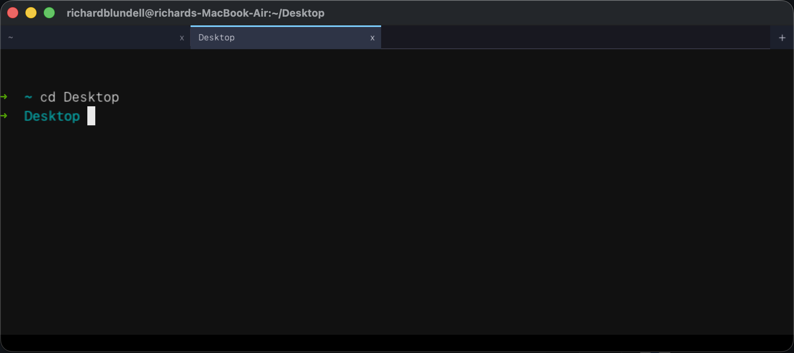

A cross-platform terminal emulator written in pure C99, rendered with raylib. Ligature shaping via HarfBuzz, sixel & kitty image protocols, OSC 8 hyperlinks, 252 built-in themes, 37 bundled fonts, tabs, split panes, cinema-grade pane effects, embedded SSH, in-scrollback search, truecolor — no Electron, no frameworks. Single self-contained binary.

Up to 16 concurrent shells. Each tab has an independent PTY, scrollback, and selection. Background tabs stay live. Cmd+R or double-click to rename a tab — manual names render larger in amber with the auto-derived suffix (shell title or cwd) alongside.
Full SGR support (16/256/truecolor), cursor movement, scroll regions, alt screen. UTF-8 and wide-character rendering with intelligent reflow on resize.
Per-pane search bar with live substring matching across scrollback and the visible grid. Enter/Down for next match, Shift+Enter/Up for previous. Matches highlighted with translucent overlays.
Click-drag to select, double-click for word (smart-trimmed), triple-click for row. Selection follows auto-wrap across rows. Cmd+C to copy, Cmd+V to paste.
Cmd++ / Cmd+- / Cmd+0 to grow, shrink, or reset. Reflows all tabs automatically so nothing gets clipped or lost.
Window resize wraps and unwraps long lines intelligently. Overflow goes to scrollback. Cursor position is preserved after every resize.
Native sixel image rendering — img2sixel, chafa, gnuplot, and other sixel-capable tools display inline images directly in the terminal.
Supports kitty's image protocol (PNG payloads). Tools that target kitty's graphics protocol render images inline alongside sixel.
Colour palettes baked into the binary at compile time from the pal submodule. Open Settings, pick a theme — it applies per-tab instantly, no restart, no config file.
Clickable hyperlinks with colored underlines. Hover highlights the full link run; Cmd+click opens the URL in the default browser.
Recursive binary split tree — Cmd+D splits vertically, Cmd+Shift+D horizontally, and you can keep subdividing any pane. Cmd+K cycles focus through all leaves in tree order. Each pane has its own PTY, screen state, selection, and theme.
Cmd+Shift+I toggles broadcast mode: every keystroke and paste fans out to all panes in the active tab. Active panes get a 3px red border + BROADCAST pill. Perfect for running the same command across multiple SSH sessions. Auto-disarms on tab switch.
Save Layout button captures the active SSH tab's split tree shape, ratios, and per-pane cwd into ~/.ssh/config as # rbterm-layout: comments. Reconnect and the split layout replays automatically.
JetBrains Mono, Fira Code, Hasklig, Victor Mono, Maple, 0xProto, Recursive, Intel One Mono, Hack, Monaspace (5 variants + Nerd Font), terroo mono (11 variants) — all embedded via .incbin. Ligature-capable fonts grouped at the top of the picker.
Rendered via Core Text + SBIX bitmap fonts. Font substitution handles missing glyphs. Windows falls back to monochrome stub.
Works with the pal CLI tool — switch your terminal's entire color palette with a single command, no restart needed.
macOS/Linux use forkpty with non-blocking read. Windows 10+ uses ConPTY with a reader thread and ring buffer. Same binary on every platform.
Cmd+Shift+T opens a tabbed SSH form with saved hosts from ~/.ssh/config. Key auth, password, and keyboard-interactive (PAM). Per-host theme/font/cursor/tab-accent-colour overrides, per-host HUD configuration, per-host init directory and init command, and a "Tab name" field that persists to # rbterm-name: in ssh config. Async per-pane writer thread with 16KB ring buffer keeps broadcast typing latency low across many SSH panes.
Startup SSH tabs connect in parallel — each launch entry spawns a worker thread running the handshake concurrently. Total startup wait drops from sum(handshakes) to max(handshakes). Placeholder loading tabs show a "Connecting to user@host..." banner until the session is ready, or a red error message on failure.
Settings → Keys tab: generate Ed25519 or RSA keys via libssh, install the public key to a remote host, and delete keys — all without leaving the terminal. Key file field in the SSH form is a dropdown of ~/.ssh keys.
Dry-run auth check before connecting. TCP preflight catches bad host/port fast, then tests key or password auth and reports the result inline — no tab opened, no session started.
Upload and download files over SSH panes — tab-bar buttons open a file/directory picker modal. Supports recursive directory transfers with per-pane progress toast. No external SFTP client needed.
Full 4:N underline menagerie — single, double, curly, dotted, dashed — with SGR 58 colored underlines. DECSCUSR cursor shape control via CSI N SP q.
OSC 9 / OSC 777 desktop notifications — fire native macOS, Linux, or Windows alerts from any shell command.
Cmd+, opens a tabbed settings panel: font & theme picker with dark/light filter and live terminal preview, cursor style, startup window size, key-repeat sliders, session logging, HUD configuration, and a Launch tab to configure tabs that auto-open on startup (local or SSH, reorderable). Changes apply live.
Capture any pane to asciicast (.cast), plain text, GIF, MP4, WebM, APNG, or WebP. Built-in GIF and WebP encoders — no external tools required. Multi-pane recording: hitting Rec on a split tab captures every leaf to its own .cast with a -p<N> suffix.
Jump-to-prompt and select-output support via OSC 133 shell integration. Tab-bar spinner shows when a command is running. Includes bash and zsh integration scripts.
Bundled rbterm-shell-integration.bash and .zsh scripts emit OSC 133 prompt marks automatically. Source them in your shell rc for prompt navigation and command tracking.
Per-pane system-info overlay showing hostname, IP, 1-min load, free memory, and free disk. Local panes poll via cheap syscalls; SSH panes probe the remote host over an auxiliary exec channel. CPU sparkline with green-yellow-red ramp. Click to collapse/expand.
Settings → HUD tab: master toggle, corner position (TL/TR/BL/BR), per-field visibility, color (8-entry palette), and font size (10–18pt). Each field is independently configurable — show just what you need. Per-host HUD configuration via the SSH form.
Cmd+CapsLock toggles rbterm visibility system-wide (macOS). App Nap disabled so the hidden window responds instantly. Focus returns to the previously frontmost app on hide.
App-wide cursor color setting with per-SSH-host override. Pick a distinct cursor color for each host so you always know where you are at a glance.
HarfBuzz-powered ligature rendering — != becomes a single glyph, => fuses, -> collapses. Toggle in Settings → Font → Ligatures. Works with all ligature-capable bundled fonts (Fira Code, Hasklig, Victor Mono, Maple, 0xProto, Recursive, Intel One Mono).
20 movie and hardware-inspired visual presets — CRT scanlines, VHS tracking, film grain, phosphor glow, amber/green monitors, and more. Applied per-pane for themed terminal sessions.
Cmd+Shift+S (or the camera button on the tab bar) captures the active pane to a PNG file. Instant pixel-perfect snapshot without needing external screenshot tools.
Cmd+Z toggles the active pane to fill the entire tab area, hiding all sibling panes. Toggle again to restore the original split layout. Useful for focusing on one SSH session in a multi-pane layout.
Built-in session log viewer with scrollable history. Review past terminal sessions without leaving rbterm. Help modal with organized sub-tabs for quick reference.
The full Windows release zip bundles ffmpeg.exe as an RCDATA resource inside the binary — mp4, webm, and apng recording works with zero install. A slim zip is also available without ffmpeg for smaller downloads.
Adaptive render cadence with focus-gated dirty triggers. Skips rendering on idle frames, sleeps until the next blink boundary, and caps idle wake at 4ms. CPU drops to effectively zero when the terminal is idle.
Cmd on macOS; Ctrl on Linux/Windows.
| Shortcut | Action |
|---|---|
| Cmd+T | New tab (local shell) |
| Cmd+Shift+T | New tab over SSH (form with saved hosts from ~/.ssh/config) |
| Cmd+W | Close tab (or pane, if split) |
| Cmd+F | Search in scrollback |
| Cmd+D / Cmd+Shift+D | Split pane vertically / horizontally (recursive) |
| Cmd+K | Cycle focus through split panes |
| Cmd+R | Rename active tab |
| Cmd+Shift+I | Toggle broadcast input to all panes |
| Cmd+, | Settings (font, theme, cursor, key repeat, logging) |
| Cmd+1..9 | Jump to tab N |
| Cmd+[ / Cmd+] | Prev / next tab |
| Cmd++ / Cmd+- / Cmd+0 | Grow / shrink / reset font |
| Ctrl+Tab / Ctrl+Shift+Tab | Next / previous tab |
| Cmd+C / Cmd+V | Copy selection / paste |
| Cmd+Shift+S | Screenshot active pane to PNG |
| Cmd+click | Open OSC 8 hyperlink |
| Shift+PgUp / PgDn | Scroll history |
| Mouse wheel | Scroll history |
| Double-click | Select word |
| Triple-click | Select row |
User Input (raylib) → input_poll() → pty_write() → Shell Process
↕
stdout of shell
↓
Screen Buffer (glyph grid) ← screen_feed() (VT parser) ← pty_read()
↓
renderer_draw() (raylib output)
Each tab owns a Pty * (pseudo-terminal connection), a Screen * (grid buffer + scrollback), a Selection (mouse selection state), and title/CWD tracking.
src/main.c Event loop, tab bar UI, SSH modal, settings, clipboard src/pty.h Platform-agnostic PTY interface (public) src/pty_internal.h Shared struct Pty + backend prototypes src/pty_dispatch.c Dispatches pty_* calls to local/SSH backend src/pty_unix.c Local PTY via forkpty (macOS/Linux) src/pty_win.c Local PTY via ConPTY (Windows) src/pty_ssh.c SSH backend via libssh — key auth, TOFU host keys src/screen.c ANSI/VT parser, grid buffer, scrollback, reflow src/render.c raylib rendering, glyph atlas, emoji cache src/input.c Input translation (raylib events → PTY bytes) src/emoji_mac.m CoreText emoji rasterizer (macOS) src/emoji_stub.c No-op stub (Linux/Windows) src/hud.c System-info overlay (hostname, IP, load, mem, disk, CPU sparkline) src/shape.c HarfBuzz ligature shaping + font fallback src/rec_effects.c Cinema-grade pane effects (CRT, VHS, film grain, phosphor…) src/gif_encoder.c Built-in GIF encoder for pane recording src/webp_encoder.c Built-in WebP encoder for pane recording tools/rbterm-shell-integration.bash OSC 133 prompt marks for bash tools/rbterm-shell-integration.zsh OSC 133 prompt marks for zsh CMakeLists.txt CMake build (fetches raylib 5.5 automatically) Makefile Quick macOS/Linux build
# macOS (fastest path) brew install raylib libssh make # ./rbterm make app # ./rbterm.app with icon + Info.plist # CMake (cross-platform, self-contained) cmake -S . -B build && cmake --build build # Linux: also needs libssh-dev (apt install libssh-dev)